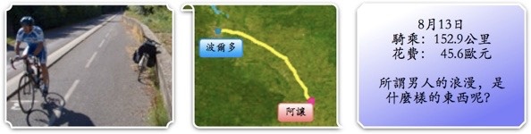
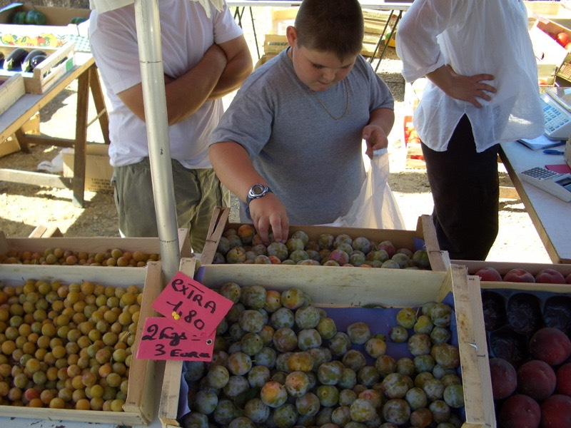
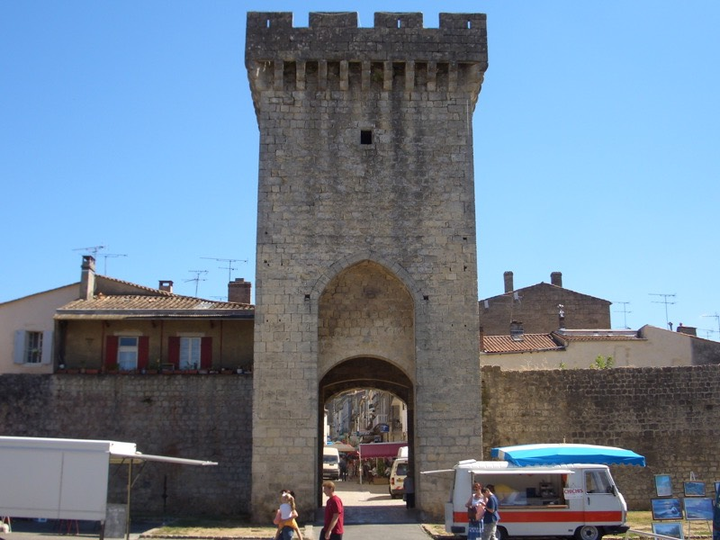
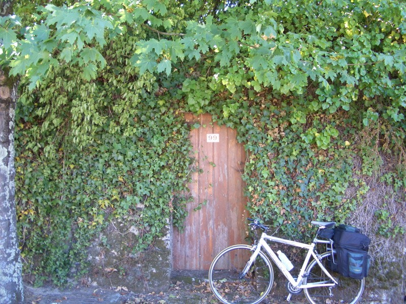
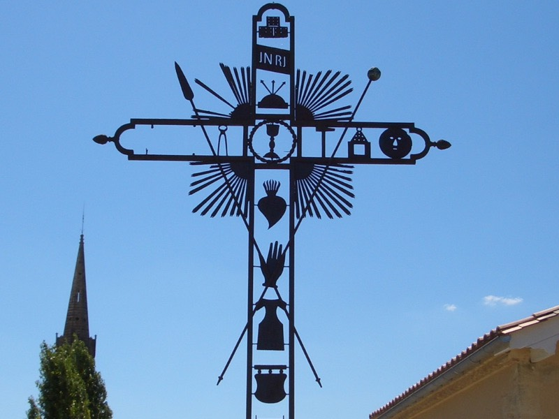

持續不斷的豔陽天，雖然不是說很熱，了不起也才27~8度，但還是曬黑了。
今天睡得有點晚，加上路邊高速上網的魅力太大，十點半才出發。
轉往東南方騎，一路沿著『La Caronne』河走，沿著河是自行車步道，很美呀∼
早餐本來是吃昨天吃不下的水蜜桃，好吃是好吃，問題是越吃越餓，份量實在太少了。
後來到麵包店繼續啃便宜又好吃的法國麵包，長長一條，0.8歐元。
再買一個像藝術品一樣，晶瑩替透的水果派，華麗的水果加上透明的糖漿，底下是厚厚一層奶油。
看著看著，越來越不捨得吃掉它，試想如果有人把故宮的翠玉白菜給吃了，會遭受多大的譴責呀！？
美食當前，昧著良心還是把它吃掉了，這麼好吃的水果派∼要是以後吃不到該怎麼辦呀∼∼3歐元。
半路又看到有人在賣自家種的水果。價錢便宜到不行。
『這個．好吃嗎？』
『你可以試吃看看呀∼』
吃了一個綠色的李子，真是超甜的！幫我包1公斤，謝謝。
胖胖的小子手腳很俐落的就挑了一袋要拿給我，還沒接過手，他媽媽又把袋子拿回去，
順手又多放了兩把李子進去，小孩馬上就說我只要買1公斤而已呀！媽媽說，你真是不會做生意。

雖然一句法文都聽不懂，但看那生動的對話動作，大概是這麼一回事吧。
在旁邊暗自偷笑，想不到連過路客都這麼好康，1公斤的李子，邊吃邊數，一共有28顆。
1公斤1.8歐元，折合台幣，每兩顆才5元。回台灣吃不到這麼甜的水果該怎麼辦呀∼∼
很努力的吃了17顆，突然想到如果有農藥殘留怎麼辦？
不知道是不是心理作祟，總覺得體內有一股熱熱的真氣上上下下的在遊走，莫非毒氣攻心？
猛灌水，看能不能沖淡一點農藥（搞不好根本就是有機農業，完全是我在亂想）。
中午12點剛過，到一個建築在城牆裡面的城市，這可不是裝飾品的城牆唷，裡頭可熱鬧的很。
真是不容易，過了幾百年了，都還能完整無缺的將先人的遺產保留下來，新舊共存。

眾多酒莊的指示牌，後頭還有自己的商標。
市政府前的雕像，『英雄』。難道一定要帶領著眾人去死才叫英雄嗎？
想必這家的主人深居簡出，門都快被植物給蓋起來了，一定要很老練的郵差才能找到這戶人家。

今天的路線也挺單純的D10->N113，直直走就對了，兩天就能到土魯斯，比想像中還要近。
有一點香港風味的建築。
這個十字架倒是蠻可愛的∼右邊還有一個無辜的臉。

諾大的太陽，能指望什麼呢？最棒的就是林蔭大道，可以邊乘涼邊騎車。
圓環的裝飾，遠遠的看，我還以為是一朵朵的花，近看了才發現，原來是各式各樣的齒輪、輪胎。
公園聚集了一大堆的歐吉桑，在玩類似鉛球＆打彈珠的遊戲。
彷彿發現奇異果樹，依舊是結果累累，而且因為一口氣都種一大片田，所以超壯觀。
農田都不會加上柵欄或是籬笆之類的，只是挖個淺淺的小溝這樣，看到四下無人就跳過去偷拍。

不明農作物系列，感覺應該是根莖類的作物，但又不能去拔一根起來驗證。
農田種的這麼大一片，澆起水來一定很費工夫才對吧，但陸續看到許多壯觀的自走自動澆水器後，
對機械農業已感到無比的佩服，今天又發現新奇的機械，自動灑水機，可以將水噴的半天高，
然後就像雨一般落下，還會自動旋轉調整噴水角度，相當厲害呀！
要是能買一台回宜蘭的話，那所有的菜圃都不用在辛苦的用人工澆水了。
真是漂亮的攔水壩，居然還有一個小小的沙洲，水清澈了很多，不在那麼樣的泥沙。
真是明信片中的景色，但這段路其實是白繞了，過了橋才發現走過頭，只好再騎回來重欣賞一次。
這就是桃子系列盛產的真相呀∼真的是一大堆的桃子，果實多到快把樹給壓垮了，
紅通通的，怎麼不見農人採收呢？同樣的沒有柵欄，壞心一點是可以偷拔路上吃的。

我當然不會幹這種事....就算有也不可能老實講出來。
有點掙扎要不要放這段影片，本來是自己拍來留紀念的，因為不是很想讓自己過度曝光的緣故@@“
波光璘璃的人工水道，晚上六點半，抵達今天的目的地『阿讓（AGEN）』。
今天是星期六，旅館客滿的日子，老天爺要繼續考驗我嗎？
好久沒有出現的無星旅館，價目表最貴的也不超過30歐元。
我也希望這張照片貼出來了，就表示今天我要在這過夜，只可惜，客滿。
一間問過一間，除了客滿還是客滿，真是討厭的星期六。
還害我半路摔車 /_\ 到了城鎮就習慣性的右手拿相機準備隨時拍照，左手就拿iBook順便找網路訊號。
右眼看路、左眼看螢幕、右腳騎車、左腳煞車（手沒空呀），這麼忙，不摔車的話，可以去馬戲團表演了。
右手護著Z55，別壞呀，壞了接下來就不用拍照了！
左手想抓住iBook，只是體積太大，瞬間就拋了出去，脫離抗震包，摔到地上。
連光碟機的托盤都跑出來了（iBook G4的使用者大概沒看過用托盤的舊機種）。
這更不能壞呀！壞了我怎麼存照片？怎麼寫遊記？怎麼上網？怎麼溫習川島？
幸好蘋果的舊機種還保有一貫的高品質，摔這麼一下居然沒事，好理加在∼（呼）
車子也沒事，慶幸慶幸，擔心的都是身邊的裝備，都忘了看看自己有沒有少條腿之類的。
旅館客滿的有點可恨，星期一∼五，旅館是那麼樣的好找，一到週末，連那種在小巷的小巷中的旅館，
也是掛上了『COMPLET』的牌子，怎麼會有人沒事跑到一個叫阿讓的城市來呢？
像這種程度的漂亮建築物，到處都有呀∼
反正時間還早，還沒超過七點，了不起接著往下騎，只是這樣就註定要超過150KM的距離了。
在離開阿讓的最後關頭，出現了旅館，最後一間房，沒的挑選的價格，只有Yes還是No。
若選No的話，身後等待的找旅館二人組就會很開心的說Yes，好吧，這間房我要了！
（讓我們歡送沒落離開的找旅館二人組。祝你們能找到過夜的地方。）
FCR1跟老闆的重機停在一起。

房價34歐元，小貴呀！！但房間還不錯，居然有個小小的浴缸，勉強能將自己泡進去紓解一下疲勞∼
稍作休息後去街上找吃的，帶著耐摔的iBook一起走，在一家快餐店前面找到訊號。
晚餐就吃KEBAB套餐，一份KEBAB+薯條+甜點（那根像春捲的東西）+汽水，6歐元。
邊吃邊上網∼還挺開心的 :D 只可惜土魯斯的好事沒有了。擦身而過的巧合∼
看來晚上十二點又要跑來這邊上傳遊記了，台灣時間一大早就有新鮮的可以看啦。
明天就要突破三千公里啦∼花哈哈哈哈，好累的感覺 ~"~